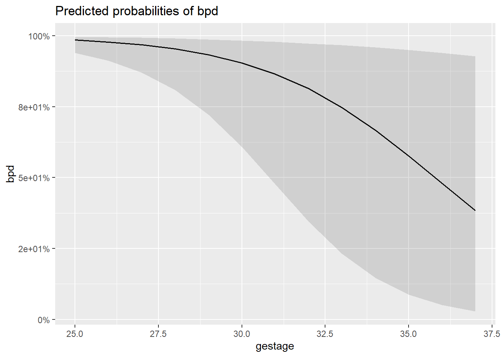
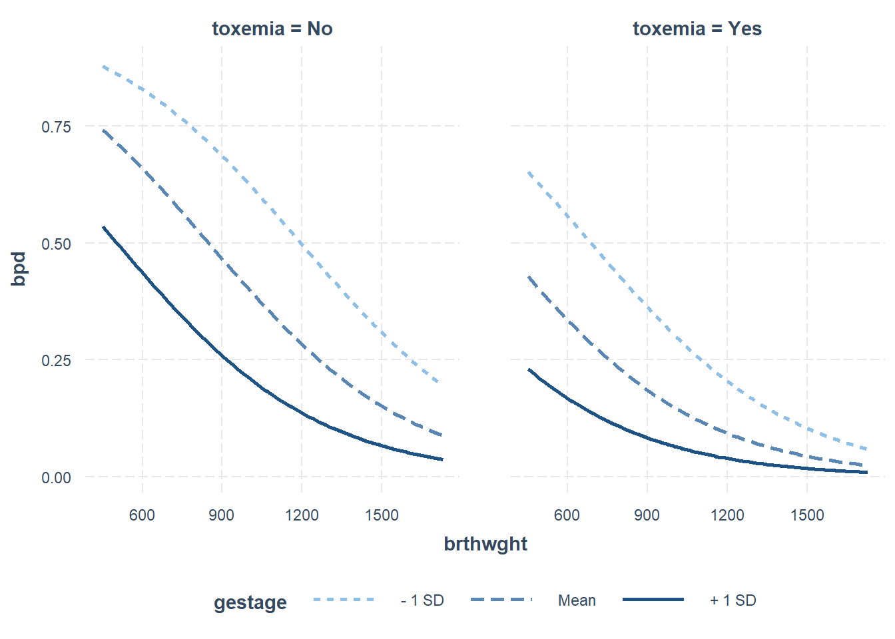
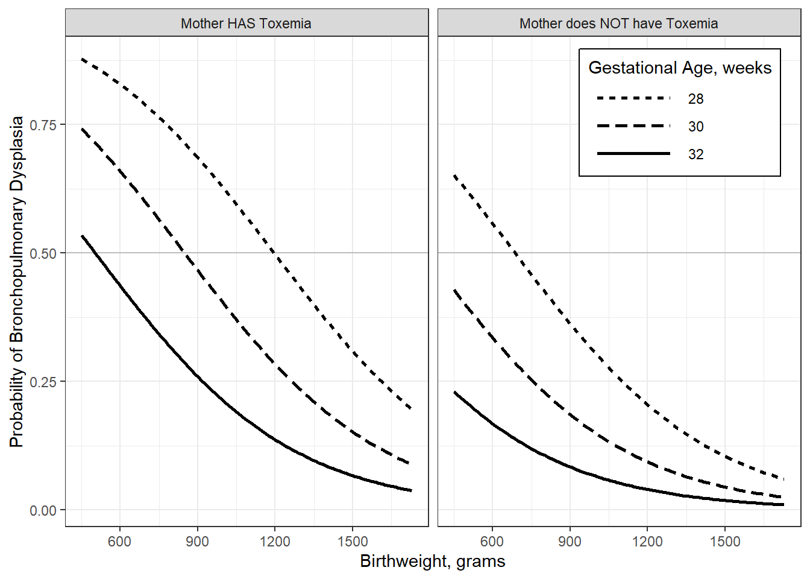
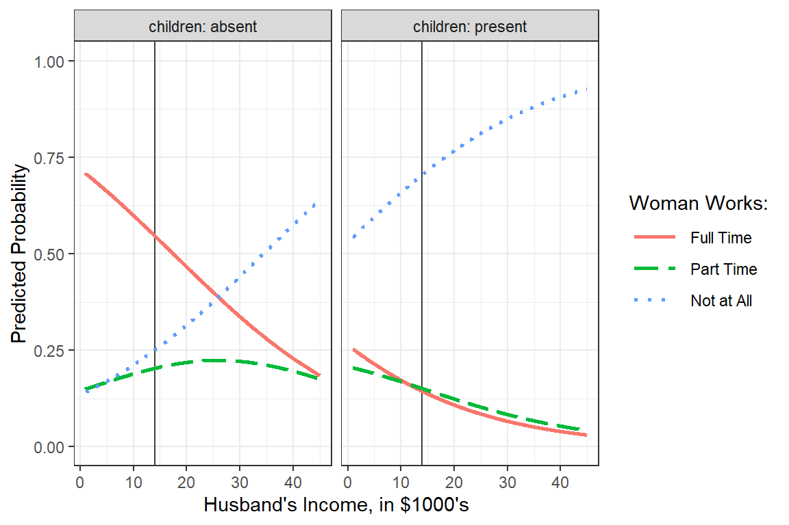
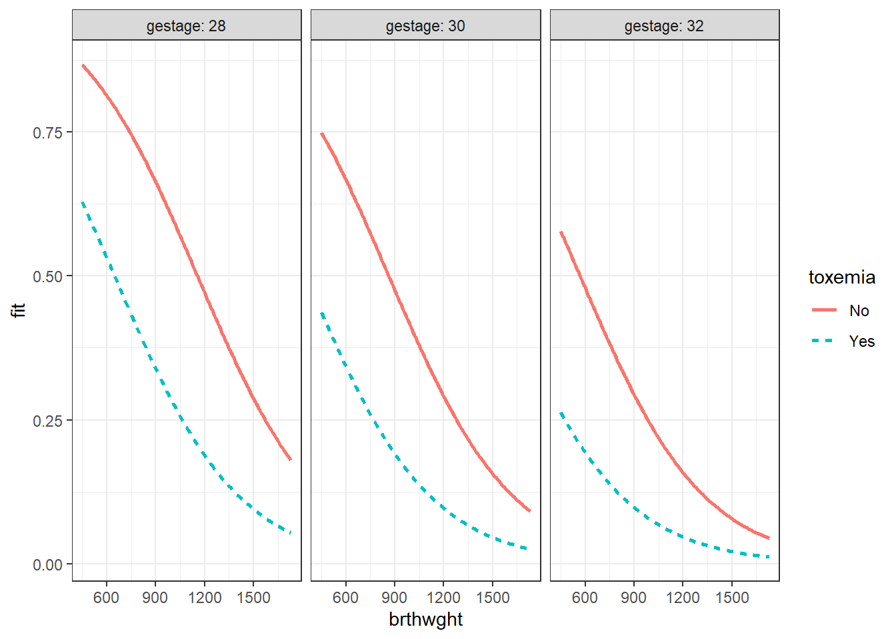

8 Logistic Regression - Ex: Bronchopulmonary Dysplasia in Premature Infants
example walk through:
https://stats.idre.ucla.edu/r/dae/logit-regression/
info:
https://onlinecourses.science.psu.edu/stat504/node/216/
sjPlot::tab_model (HTML only)
http://www.strengejacke.de/sjPlot/articles/sjtlm.html#changing-summary-style-and-content
finafit
https://www.r-bloggers.com/elegant-regression-results-tables-and-plots-in-r-the-finalfit-package/
Install a package Dr. Schwartz wrote:
library(tidyverse)
library(haven) # read in SPSS dataset
library(furniture) # nice table1() descriptives
library(stargazer) # display nice tables: summary & regression
library(texreg) # Convert Regression Output to LaTeX or HTML tables
library(texreghelpr) # Dr. Schwartz's helper funtcions for texreg tables
library(psych) # contains some useful functions, like headTail
library(car) # Companion to Applied Regression
library(pscl) # psudo R-squared function
library(interactions) # interaction plots
library(sjPlot) # various plots
library(performance) # r-squared values8.1 Background
Simple example demonstrating basic modeling approach: Data on Bronchopulmonary Dysplasia (BPD) from 223 low birth weight infants (weighing less than 1750 grams).
8.1.1 Source
Data courtesy of Dr. Linda Van Marter.
8.1.2 Reference
Van Marter, L.J., Leviton, A., Kuban, K.C.K., Pagano, M. & Allred, E.N. (1990). Maternal glucocorticoid therapy and reduced risk of bronchopulmonary dysplasia. Pediatrics, 86, 331-336.
The data are from a study of low birth weight infants in a neonatal intensive care unit. The study was designed to examine the development of bronchopulmonary dysplasia (BPD), a chronic lung disease, in a sample of 223 infants weighing less than 1750 grams. The response variable is binary, denoting whether an infant develops BPD by day 28 of life (where BPD is defined by both oxygen requirement and compatible chest radiograph).
8.1.3 Variables
bpd0 = no, 1 = yes
brthwghtnumber of grams
gestagenumber of weeks
toxemiain mother, 0 = no, 1 = yes
bpd_raw <- read.table("https://raw.githubusercontent.com/CEHS-research/data/master/Regression/VanMarter_%20BPD.txt",
header = TRUE,
strip.white = TRUE)[1] 223Rows: 223
Columns: 4
$ bpd <int> 1, 0, 1, 0, 0, 0, 1, 0, 1, 1, 0, 0, 1, 1, 0, 0, 1, 1, 1, 1...
$ brthwght <int> 850, 1500, 1360, 960, 1560, 1120, 810, 1620, 1000, 700, 13...
$ gestage <int> 27, 33, 32, 35, 33, 29, 28, 32, 30, 26, 31, 31, 31, 29, 33...
$ toxemia <int> 0, 0, 0, 1, 0, 0, 0, 0, 0, 0, 0, 0, 0, 0, 0, 0, 0, 0, 0, 0...# A tibble: 6 x 4
bpd brthwght gestage toxemia
<int> <int> <int> <int>
1 1 850 27 0
2 0 1500 33 0
3 1 1360 32 0
4 0 960 35 1
5 0 1560 33 0
6 0 1120 29 0Note: For logistic regression, you need to leave the outcome (dependent variable) coded as zeros
0and ones1and NOT apply lables. You do want to apply labels to factors that function as predictors (independent varaibles).
bpd_clean <- bpd_raw %>%
dplyr::mutate(toxemia = factor(toxemia,
levels = c(0, 1),
labels = c("No", "Yes"))) bpd brthwght gestage toxemia
Min. :0.0000 Min. : 450 Min. :25.00 No :194
1st Qu.:0.0000 1st Qu.: 895 1st Qu.:28.00 Yes: 29
Median :0.0000 Median :1140 Median :30.00
Mean :0.3408 Mean :1173 Mean :30.09
3rd Qu.:1.0000 3rd Qu.:1465 3rd Qu.:32.00
Max. :1.0000 Max. :1730 Max. :37.00 8.2 Logistic Regresion
Instead of using the lm() function from base R, you use glm(). You also need to add an option to specify which generalization you want to use. To do logistic regression for a binary outcome, use family = binomial(link = "logit").
8.2.1 Fit the Models
Null Model:
Main Effects Model:
fit_glm_1 <- glm(bpd ~ I(brthwght/100) + gestage + toxemia,
data = bpd_clean,
family = binomial(link = "logit")) 8.2.1.1 Log Likelihood
'log Lik.' -143.07 (df=1)'log Lik.' -101.8538 (df=4)8.2.2 GoF Measures
8.2.2.2 Logistic R^2
http://thestatsgeek.com/2014/02/08/r-squared-in-logistic-regression/
Technically, \(R^2\) cannot be computed the same way in logistic regression as it is in OLS regression. NULL model and \(L_1\) is the log likelihood for the full model with constant and predictors. There are several (over 10) alternatives that endever to calculate a similar metric in different ways.
8.2.2.3 McFadden’s pseud-R^2
McFadden’s \(pseudo-R^2\), in logistic regression, is defined as \(1−\frac{L_1}{L_0}\), where \(L_0\) represents the log likelihood for the “constant-only” or
\[ R^2_{McF} = 1 - \frac{L_1}{L_0} \]
'log Lik.' 0.2880843 (df=4)8.2.2.4 Cox & Snell
\(l = e^{L}\), since \(L\) is the log of the likelihood and \(l\) is the likelihood…\(log(l) = L\)
\[ R^2_{CS} = 1 - \Bigg( \frac{l_0}{l_1} \Bigg) ^{2 \backslash n} \\ n = \text{sample size} \]
'log Lik.' 0.3090253 (df=1)8.2.2.5 Nagelkerke or Cragg and Uhler’s
\[ R^2_{Nag} = \frac{1 - \Bigg( \frac{l_0}{l_1} \Bigg) ^{2 \backslash n}} {1 - \Big( l_0 \Big) ^{2 \backslash n}} \]
'log Lik.' 0.4275191 (df=1)8.2.3 Parameter Estimates
8.2.3.1 Logit Scale
(Intercept) I(brthwght/100) gestage toxemiaYes
13.9360826 -0.2643578 -0.3885357 -1.3437865 8.2.3.2 Odds Ratio Scale
(Intercept) I(brthwght/100) gestage toxemiaYes
1.128142e+06 7.676988e-01 6.780490e-01 2.608561e-01 8.2.4 Significance of Terms
8.2.4.1 Likelihood Ratio Test (Deviance Difference) of all Nested Models
# A tibble: 2 x 4
`Resid. Df` `Resid. Dev` Df Deviance
<dbl> <dbl> <dbl> <dbl>
1 222 286. NA NA
2 219 204. 3 82.48.2.5 Parameter Estimates
8.2.5.1 Raw Output
Call:
glm(formula = bpd ~ I(brthwght/100) + gestage + toxemia, family = binomial(link = "logit"),
data = bpd_clean)
Deviance Residuals:
Min 1Q Median 3Q Max
-1.8400 -0.7029 -0.3352 0.7261 2.9902
Coefficients:
Estimate Std. Error z value Pr(>|z|)
(Intercept) 13.93608 2.98255 4.673 2.98e-06 ***
I(brthwght/100) -0.26436 0.08123 -3.254 0.00114 **
gestage -0.38854 0.11489 -3.382 0.00072 ***
toxemiaYes -1.34379 0.60750 -2.212 0.02697 *
---
Signif. codes: 0 '***' 0.001 '**' 0.01 '*' 0.05 '.' 0.1 ' ' 1
(Dispersion parameter for binomial family taken to be 1)
Null deviance: 286.14 on 222 degrees of freedom
Residual deviance: 203.71 on 219 degrees of freedom
AIC: 211.71
Number of Fisher Scoring iterations: 58.2.5.2 sjPlot - HTML tables
JUST HTML for now…
Parameters Exponentiated:
| bpd | |||
|---|---|---|---|
| Predictors | Odds Ratios | CI | p |
| (Intercept) | 1128141.99 | 4402.38 – 559132968.51 | <0.001 |
| brthwght/100 | 0.77 | 0.65 – 0.90 | 0.001 |
| gestage | 0.68 | 0.54 – 0.84 | 0.001 |
| toxemia [Yes] | 0.26 | 0.07 – 0.81 | 0.027 |
| Observations | 223 | ||
| R2 Tjur | 0.346 | ||
sjPlot::tab_model(fit_glm_1,
emph.p = TRUE,
pred.labels = c("(Intercept)",
"Birthweight, 100 grams",
"Gestational Age, week",
"Mother had Toxemia")) | bpd | |||
|---|---|---|---|
| Predictors | Odds Ratios | CI | p |
| (Intercept) | 1128141.99 | 4402.38 – 559132968.51 | <0.001 |
| Birthweight, 100 grams | 0.77 | 0.65 – 0.90 | 0.001 |
| Gestational Age, week | 0.68 | 0.54 – 0.84 | 0.001 |
| Mother had Toxemia | 0.26 | 0.07 – 0.81 | 0.027 |
| Observations | 223 | ||
| R2 Tjur | 0.346 | ||
8.2.5.3 texreg default = Logit scale
| Model 1 | |
|---|---|
| (Intercept) | 13.94 (2.98)*** |
| brthwght/100 | -0.26 (0.08)** |
| gestage | -0.39 (0.11)*** |
| toxemiaYes | -1.34 (0.61)* |
| AIC | 211.71 |
| BIC | 225.34 |
| Log Likelihood | -101.85 |
| Deviance | 203.71 |
| Num. obs. | 223 |
| p < 0.001; p < 0.01; p < 0.05 | |
8.2.5.4 texreg Confidence Intervals on Logit scale
| Model 1 | |
|---|---|
| (Intercept) | 13.94 [ 8.09; 19.78]* |
| brthwght/100 | -0.26 [-0.42; -0.11]* |
| gestage | -0.39 [-0.61; -0.16]* |
| toxemiaYes | -1.34 [-2.53; -0.15]* |
| AIC | 211.71 |
| BIC | 225.34 |
| Log Likelihood | -101.85 |
| Deviance | 203.71 |
| Num. obs. | 223 |
| * 0 outside the confidence interval. | |
8.2.5.5 texreg exponentiate the betas (SE are not exp) with 95% confidence intervals
| Model 1 | |
|---|---|
| (Intercept) | 1128141.99 [4402.38; 559132968.51]* |
| brthwght/100 | 0.77 [ 0.65; 0.90]* |
| gestage | 0.68 [ 0.54; 0.84]* |
| toxemiaYes | 0.26 [ 0.07; 0.81]* |
| AIC | 211.71 |
| BIC | 225.34 |
| Log Likelihood | -101.85 |
| Deviance | 203.71 |
| Num. obs. | 223 |
| * 0 outside the confidence interval. | |
8.2.5.6 texreg with Logit and OR values BOTH
texreg::knitreg(list(fit_glm_1,
texreghelpr::extract_glm_exp(fit_glm_1,
include.aic = FALSE,
include.bic = FALSE,
include.loglik = FALSE,
include.deviance = FALSE,
include.nobs = FALSE)),
custom.model.names = c("b (SE)",
"OR [95% CI]"),
single.row = TRUE,
ci.test = 1)| b (SE) | OR [95% CI] | |
|---|---|---|
| (Intercept) | 13.94 (2.98)*** | 1128141.99 [4402.38; 559132968.51]* |
| brthwght/100 | -0.26 (0.08)** | 0.77 [ 0.65; 0.90]* |
| gestage | -0.39 (0.11)*** | 0.68 [ 0.54; 0.84]* |
| toxemiaYes | -1.34 (0.61)* | 0.26 [ 0.07; 0.81]* |
| AIC | 211.71 | |
| BIC | 225.34 | |
| Log Likelihood | -101.85 | |
| Deviance | 203.71 | |
| Num. obs. | 223 | |
| p < 0.001; p < 0.01; p < 0.05 (or Null hypothesis value outside the confidence interval). | ||
8.2.6 Marginal Model Plot
8.2.6.1 Manually Specified
bpd brthwght gestage toxemia
Min. :0.0000 Min. : 450 Min. :25.00 No :194
1st Qu.:0.0000 1st Qu.: 895 1st Qu.:28.00 Yes: 29
Median :0.0000 Median :1140 Median :30.00
Mean :0.3408 Mean :1173 Mean :30.09
3rd Qu.:1.0000 3rd Qu.:1465 3rd Qu.:32.00
Max. :1.0000 Max. :1730 Max. :37.00 $brthwght
$gestage
$toxemia
interactions::interact_plot(model = fit_glm_1,
pred = brthwght,
modx = gestage,
mod2 = toxemia,
outcome.scale = "link")
interactions::interact_plot(model = fit_glm_1,
pred = brthwght,
modx = gestage,
mod2 = toxemia,
outcome.scale = "response")
interactions::interact_plot(model = fit_glm_1,
pred = brthwght,
modx = gestage,
modx.labels = c(28, 30, 32),
mod2 = toxemia,
outcome.scale = "response",
x.label = "Birthweight, grams",
y.label = "Probability of Bronchopulmonary Dysplasia",
legend.main = "Gestational Age, weeks",
mod2.label = c("Mother HAS Toxemia",
"Mother does NOT have Toxemia"),
colors = rep("black", 3)) +
geom_hline(yintercept = .5, alpha = .2) +
theme_bw() +
theme(legend.background = element_rect(color = "black"),
legend.position = c(1, 1),
legend.justification = c(1.1, 1.1),
legend.key.width = unit(2, "cm"))
effects::Effect(focal.predictors = c("brthwght", "toxemia", "gestage"),
mod = fit_glm_1,
xlevels = list(brthwght = seq(from = 450, to = 1730, by = 10),
gestage = c(28, 30, 32))) %>%
data.frame() %>%
dplyr::mutate(gestage = factor(gestage)) %>%
ggplot(aes(x = brthwght,
y = fit)) +
geom_ribbon(aes(ymin = lower,
ymax = upper,
fill = toxemia),
alpha = .2) +
geom_line(aes(linetype = toxemia,
color = toxemia),
size = 1) +
facet_grid(. ~ gestage, labeller = label_both) +
theme_bw()
effects::Effect(focal.predictors = c("brthwght", "toxemia", "gestage"),
mod = fit_glm_1,
xlevels = list(brthwght = seq(from = 450, to = 1730, by = 10),
gestage = c(28, 30, 32))) %>%
data.frame() %>%
dplyr::mutate(gestage = factor(gestage)) %>%
ggplot(aes(x = brthwght,
y = fit)) +
geom_line(aes(linetype = toxemia,
color = toxemia),
size = 1) +
facet_grid(. ~ gestage, labeller = label_both) +
theme_bw()